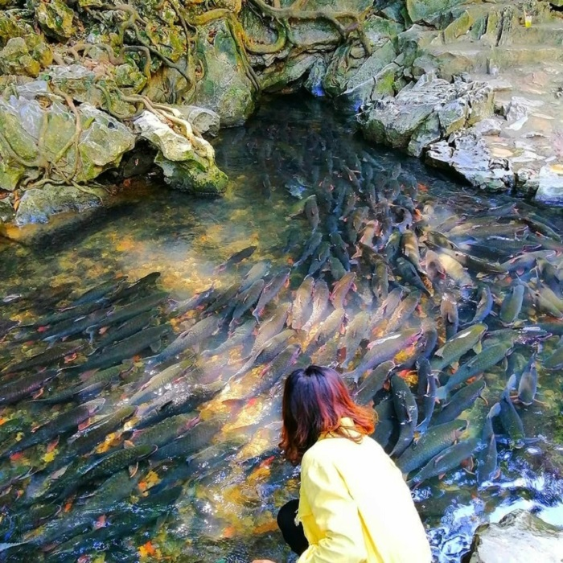

Du lịch suối cá thần Thanh Hóa - Hành trình ly kỳ khám phá bí ẩn tự nhiên
Du lịch suối cá thần Thanh Hóa có gì thú vị? Nằm cách trung tâm thành phố Thanh Hóa chưa tới 80km theo hướng Tây Bắc, suối cá thần Cẩm Lương là địa điểm tham quan hấp dẫn và độc đáo của xứ Thanh. Cùng mình bỏ túi kinh nghiệm du lịch suối cá thần Thanh Hóa siêu chi tiết dưới đây nhé!
1. Du lịch suối cá thần Thanh Hóa có gì thú vị?
1.1. Tìm hiểu truyền thuyết li kì về suối cá thần
Suối cá thần Cẩm Lương (hay còn có tên gọi khác là suối cá thần làng Ngọc) gắn liền với truyền thuyết về Thần Rắn xa xưa. Rất lâu về trước, có hai vợ chồng tuy tuổi đã cao nhưng vẫn chưa có con. Một ngày nọ, trong khi làm việc ngoài thửa ruộng bên cạnh suối, bắt cua bắt cá về làm thức ăn thì người vợ xúc được một quả trứng với hình thù kỳ lạ.
Thấy vậy nên bà không dám lấy mà chỉ đặt quả trứng về chỗ cũ. Ấy vậy mà sau rất nhiều lần xúc được lại thả xuống nước thì quả trứng đó vẫn nằm trong rổ. Bà bèn đem về, đem ấp thì trứng nở ra một con rắn. Hoảng sợ nên người chồng đưa rắn con thả ra suối Ngọc nhưng cứ thả thì tối tối rắn lại trở về nhà.
Không thể làm gì hơn nên 2 vợ chồng để rắn sống cùng gia đình như những con vật nuôi khác. Điều kì lạ là từ khi có rắn ở trong nhà, nước lúc nào cũng đầy đủ để dùng cho tưới tiêu cày cấy, đời sống người dân trong vùng ấm no hạnh phúc vì không phải chịu cảnh hạn hán kéo dài nữa.
Bình yên thường trôi qua rất mau, sau một đêm mưa to gió lớn đánh nhau với thuỷ quái về phá hoại bản làng thì sáng hôm sau người ta đã thấy xác con rắn đã chết trôi dạt vào chân núi Trường Sinh. Để nhớ công ơn, dân làng chôn chàng rắn ngay chân núi và lập đền thờ tại đây. Cũng từ đó, suối Ngọc trước cửa đền lúc nào cũng có đàn cá hàng ngàn con ngày đêm về chầu và người dân không bao giờ ăn cá suối Ngọc, cũng như quen gọi cá thần từ đây.
Tìm hiểu những truyền thuyết ly kỳ khi du lịch suối cá thần Thanh Hóa (Ảnh: sưu tầm)
Điều kì lạ về đàn cá tại suối cá thần Cẩm Lương
Nếu có dịp đến xứ Thanh, bạn nhớ ghé qua suối cá thần Cẩm Lương để có cơ hội lắng nghe người dân địa phương kể lại nhiều giai thoại bí ẩn quanh con suối này nhé. Đây sẽ là một trải nghiệm cực kì thú vị đó.
1.2. Chiêm ngưỡng đàn cá hàng ngàn con trên dòng suối Ngọc
Hai bên đường đi vào khu du lịch suối cá thần Thanh Hóa là những ngôi nhà sàn mộc mạc, đơn sơ - hình ảnh đặc trưng của dân tộc Mường. Bạn sẽ được chiêm ngưỡng vẻ đẹp yên bình của không gian nơi đây với những dãy núi cao hai bên bờ sông Mã.

Làn nước suối Ngọc trong xanh tại khu du lịch suối cá thần Thanh Hóa (Ảnh: sưu tầm)
Giữa bốn bề núi đá vôi dựng đứng, dòng suối này có chiều dài khoảng 100m, rộng chứng 3 - 4m, sâu 30 - 50cm nhưng lại là nơi có mật độ cá sinh sống rất lớn. Những con cá ở đây nặng từ 2kg đến 8kg, có con cá chúa còn nặng đến gần 30kg nữa đó.
Đàn cá bơi lội tại khu du lịch suối cá thần Thanh Hóa (Ảnh: sưu tầm)
Hình thù các loài cá này rất lạ, đa dạng về màu sắc. Khi đàn cá lật mình bơi lội dưới ánh nắng mặt trời sẽ thay đổi liên tục với đa dạng màu sắc như màu xanh, màu đỏ, màu vàng, màu hồng….lấp lánh bạc. Đây chính là lý do mà chúng được gọi là cá thần.

Du lịch suối cá thần Thanh Hóa (Ảnh: sưu tầm)
Theo dân gian lưu truyền, rằng nếu như ai chạm được tay vào cá sẽ gặp được nhiều điều may mắn bởi cá thần không cho người chạm vào mình. Nếu có hứng thú, bạn có thể thử xem “vận may” của mình thế nào nhé!
1.3. Tham quan đền Ngọc - động Cây Đăng
Tại khu du lịch suối cá thần Thanh Hóa còn có đền Ngọc thờ Tứ Phủ Long Vương, phía trên suối cá có động Cây Đăng với cảnh sắc lung linh huyền bí, nhiều nhũ đá hình thù kỳ vĩ, lấp lánh như kim cương… cực kì đẹp. Một điều thú vị là khi bạn bước vào cửa hang một đường, sau khi khám phá hết một vòng sẽ ra ngoài bằng đường khác, tạo thành một vòng tròn khép kín.
Khám phá động Cây Đăng khi du lịch suối cá thần Thanh Hóa (Ảnh: sưu tầm)
2. Kinh nghiệm đi suối cá thần Thanh Hóa
2.1. Suối cá thần Cẩm Thủy Thanh Hóa ở đâu?
Suối cá thần Cẩm Thủy nằm ở miền núi phía Tây tỉnh Thanh Hóa, ở hai bên bờ sông Mã, một phần nằm ở lưu vực sông Mã, một nhánh của sông Chu. Dòng suối này gồm 3 con suối: Suối cá thần Cẩm Lương, suối cá thần Cẩm Liên, suối cá thần ở xã Văn Nho.
Bà con dân tộc Mường ở Thanh Hóa tin rằng suối cá thần là nơi linh thiêng bảo vệ cho dân làng. Sự đông đúc của đàn cá chính là biểu tượng của sự no ấm, bình yên cho cuộc sống người dân. Chính vì vậy mà suối cá thần được khoác lên mình một diện mạo đầy kì bí, thần kỳ.
Ngắm nhìn đàn cá thần trong “truyền thuyết” (Ảnh: sưu tầm)
2.2. Thời điểm đẹp nhất tham quan khu du lịch suối cá thần Thanh Hóa
Khu du lịch suối cá thần Thanh Hóa mở cửa đón khách tham quan quanh năm nên bạn có thể đến đây vào bất cứ thời điểm nào trong năm. Thế nhưng, thời điểm lý tưởng nhất là vào mùa hè từ tháng 4 - tháng 9 hàng năm.
Lúc này, bạn sẽ có cơ hội chiêm ngưỡng cá chúa bởi cá chúa chỉ xuất hiện khi nước dâng cao. Hơn nữa, mùa hè nước suối rất trong và mát, đàn cá xuất hiện lấp lánh dưới ánh mặt trời sẽ tạo ra một khung cảnh tuyệt vời hơn đấy. Theo tâm linh, suối cá thần Cẩm Lương đem lại sự may mắn nên bạn cũng có thể đi vào dịp đầu xuân.
Check-in tại khu du lịch suối cá thần Thanh Hóa (Ảnh: sưu tầm)
2.3. Giá vé tham quan suối cá thần Thanh Hóa
Giá vé vào cửa tham quan:
- Người lớn: 20.000 đ
- Trẻ em: 10.000 đ
- MIỄN PHÍ: trẻ em dưới 1m
Giá vé xe điện: 27.000đ/ khứ hồi/ người
2.4. Hướng dẫn đường đi đến suối cá thần Thanh Hóa
Hướng dẫn đường đi khi du lịch suối cá thần Thanh Hóa (Ảnh: sưu tầm)
3. Những lưu ý khi du lịch suối cá thần Thanh Hóa
Suối cá thần Cẩm Lương vừa là điểm du lịch Thanh Hóa, vừa là nơi linh thiêng nên bạn cần lưu ý một số điều sau đây để chuyến đi được trọn vẹn nhất nha:
- Không bắt cá.
- Không xả rác, chất thải xuống suối cũng như trong khu du lịch.
- Không cho cá ăn những thức ăn không phù hợp.
- Không làm hư hại thạch nhũ khi tham quan động.
Du lịch suối cá thần Thanh Hóa (Ảnh: sưu tầm)
4. Thưởng thức đặc sản Thanh Hóa khi đến suối cá thần Cẩm Lương
Nếu có dịp du lịch Thanh Hóa, bạn đừng bỏ qua những món đặc sản sau nhé!
4.1. Cơm lam - gà nướng
Xứ Thanh nổi tiếng với văn hóa ẩm thực đa dạng bởi hiếm có vùng đất nào trên dải đất hình chữ S này có đầy đủ cả núi, rừng, biển và đồng bằng như nơi đây. Và mỗi một miền lại có những đặc sản riêng.
Đến khu du lịch suối cá thần Thanh Hóa, một trong những món ăn mà bạn không nên bỏ qua là gà nướng chấm muối ớt ăn kèm cơm lam. Miếng thịt gà nướng thơm phức ăn kèm với cơm lam gạo dẻo, thêm chút muối tiêu ớt là chuẩn bài luôn.
Gà nướng chấm muối ớt và cơm lam là 2 món bạn nhất định phải thử khi du lịch suối cá thần Thanh Hóa (Ảnh: sưu tầm)
Check-in đặc sản Thanh Hóa giữa núi non cảnh đẹp Thanh Hóa (Ảnh: sưu tầm)
4.2. Nem chua Thanh Hóa
Nem chua Thanh Hóa được làm từ thịt sống, bì lợn cùng các gia vị như tiêu, tỏi, ớt cho lên men đến chín, khi ăn có vị chua dịu đậm đà. Từ chiếc nem chua cổ truyền, người dân Thanh Hóa sáng tạo ra rất nhiều loại với cách chế biến, thưởng thức khác nhau. Nào là nem dài, nem oản, nem cối, nem vuông…
Chúng khác nhau ở hình thức và khối lượng, tùy mục đích sử dụng nhưng không thay đổi hương vị đặc trưng. Bên cạnh đó, cũng có nhiều biến tấu cho món nem như nem thính, nem cuốn, nem nướng, nem rán… Mỗi món lại mang đến trải nghiệm hương vị thú vị riêng cho người thưởng thức.
Du lịch suối cá thần Thanh Hóa nên mua gì về làm quà? Nem chua Thanh Hóa (Ảnh: sưu tầm)
Để thưởng thức món nem chua đặc sản Thanh Hóa thơm ngon nhất, bạn có thể đến các nhà nem Gốc Đa, Cương Dũng, Vũ Linh, nem bà Thường, bà Năm hay trên vỉa hè các phố Đinh Lễ, Tô Vĩnh Diện, Ngọc Trạo để mua được nem chua chính hiệu nhé!
4.3. Chả tôm
Thông thường, chả tôm được làm từ tôm non xay nhuyễn cho thêm gia vị và đem rán vàng. Thế nhưng điều làm nên nét nổi bật, hấp dẫn riêng có cho chả tôm Thanh Hóa là ở khâu chế biến kỳ công hơn.
Tôm nõn giá nhuyễn, cho ít bột gấc để tạo màu, sau đó trộn đều với thịt ba chỉ (đã rán vàng và băm nhuyễn), hành tỏi phi vàng, hạt tiêu rồi đem gói vào bánh phở và nướng trên than hoa. Khi chả tôm chín, thực khách ăn kèm cùng rau sống và nước chấm chua ngọt đặc biệt để hương vị thêm trọn vẹn.
Bạn nhớ đừng bỏ qua món chả tôm thơm ngon, béo béo khi du lịch suối cá thần Thanh Hóa (Ảnh: sưu tầm)
4.4. Bánh lá răng bừa
Đây là loại bánh có ở nhiều nơi với tên gọi bánh tẻ, bánh giò, bánh lá, còn người Thanh Hóa gọi là bánh răng bừa vì có hình dạng giống một nông cụ quen thuộc của nhà nông. Chiếc bánh răng bừa nhỏ xinh nhưng mang đậm hồn quê bình dị là thứ quà sáng yêu thích của nhiều người.
Bánh lá răng bừa Thanh Hóa được gói bằng lá dong hoặc lá chuối, nhân bánh gồm thịt ba chỉ, mộc nhĩ, hạt tiêu và hành khô băm nhỏ đã xào qua. Khi mới luộc xong, chiếc bánh bốc khói nghi ngút, dậy mùi thơm của hành mỡ, ăn vào thấy mềm và rất vừa miệng. Còn khi để nguội, ăn sần sật cũng ngon không kém phần.
Thưởng thức bánh lá răng vừa vừa dẻo vừa thơm khi đi du lịch suối cá thần Thanh Hóa (Ảnh: sưu tầm)